The original, as published: DoITPoMS, University of Cambridge, Mechanics of Fibre-reinforced Composites. CC BY-NC-SA 4.0, https://creativecommons.org/licenses/by-nc-sa/4.0/. Imported as published, from https://www.doitpoms.ac.uk/tlplib/fibre_composites/ https://www.doitpoms.ac.uk/tlplib/fibre_composites/
In the search for stiff, light, durable and easily manufactured materials, there has been an ever-increasing emphasis on composites over the past 50 years. Although metals have excellent strength and toughness combinations they are quite dense and many corrode in use. Attention has then turned to ceramics and polymers, which are lighter and more corrosion-resistant, but often lack toughness.
Generally, a composite is a combination of two materials that exhibit desired properties of both constituents, such as compressive strength of the matrix and tensile strength of the fibres. Usually, they consist of ceramic or polymer fibres embedded in a matrix, usually a thermosetting resin such as an epoxy or polyester, but can also be thermoplastics or ceramics or even metals. The fibres are strong due to the removal of flaws in the case of ceramics and molecular alignment for polymers. The three main types of fibre used are:
In some types of composite, the fibres are oriented randomly within a plane, while in others the material is made up of a stack of differently-oriented "plies" to form a laminate, each ply containing an aligned set of parallel fibres.
The choices of composition and of the materials used as matrix and fibre are dependent on the required properties. This can be deduced by deriving a merit index for the performance required followed by the use of Ashby property maps.
As is often the case with science, it is nature that hints at the good mechanical properties of composites, for example wood and bones. For thousands of years we have been using composites, whether it be in brick walls or concrete, and now, composites are widely used in automotive, aerospace, marine and sports applications. Therefore an understanding of how composite materials behave is crucial to any technological advances.
Before we go into the details it is worth noting that the most suitable material for a given application may well not be the stiffest material. For example, for a given force applied to the free end of a cantilevered composite beam, the minimum deflection per unit mass is achieved by maximizing the merit index E / ρ2.
Click here for Merit index derivation. (See Optimisation of Materials Properties in Living Systems for more on merit indices)
An Ashby property map (Young's Modulus against Density) for composites:
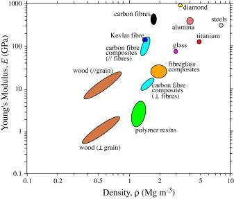
The axial and transverse Young's Moduli can be predicted using a simple slab model, in which the fibre and matrix are represented by parallel slabs of material, with thicknesses in proportion to their volume fractions, E and (1- E).
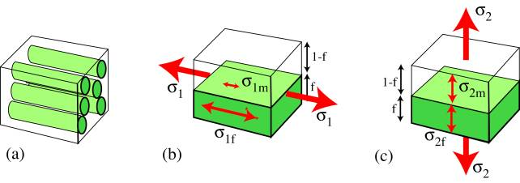
The fibre strain is equal to the matrix strain: EQUAL STRAIN.
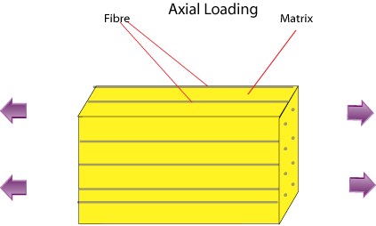
\[{\varepsilon _1} = {\varepsilon _{1{\rm{f}}}} = \frac{{{\sigma _{1{\rm{f}}}}}}{{{E_{\rm{f}}}}} = {\varepsilon _{1{\rm{m}}}} = \frac{{{\sigma _{1{\rm{m}}}}}}{{{E_{\rm{m}}}}} = \frac{{{\sigma _1}}}{{{E_1}}}\]
See definitions of terms
For a composite in which the fibres are much stiffer than the matrix ( Ef >> Em ), the reinforcement fibre is subject to much higher stresses ( σ1f >> σ1m ) than the matrix and there is a redistribution of the load. The overall stress σ1 can be expressed in terms of the two contributions:
σ1 = ( 1 - f )σ1m + f σ1f
The Young's modulus of the composite can now be written as
\({E_1} = \frac{{{\sigma _1}}}{{{\varepsilon _1}}} = \frac{{\left( {1 - f} \right){\sigma _{1{\rm{m}}}} + f{\sigma _{1{\rm{f}}}}}}{{\left( {\frac{{{\sigma _{1{\rm{f}}}}}}{{{E_{\rm{f}}}}}} \right)}} = \left( {1 - f} \right){E_{\rm{m}}} + f{E_{\rm{f}}}\) (1)
This is known as the "Rule of Mixtures" and it shows that the axial stiffness is given by a weighted mean of the stiffnesses of the two components, depending only on the volume fraction of fibres.
The stress acting on the reinforcement is equal to the stress acting on the matrix: EQUAL STRESS.
σ2 = σ2f = ε2f Ef = σ2m = ε2mEm
The net strain is the sum of the contributions from the matrix and the fibre:
ε2 = f ε2f + ( 1 - f ) ε2m (5)
from which the composite modulus is given by:
\[{E_2} = \frac{{{\sigma _2}}}{{{\varepsilon _2}}} = \frac{{{\sigma _{2{\rm{f}}}}}}{{f{\varepsilon _{2{\rm{f}}}} + (1 - f){\varepsilon _{2{\rm{m}}}}}} = {\left[ {\frac{f}{{{E_{\rm{f}}}}} + \frac{{(1 - f)}}{{{E_{\rm{m}}}}}} \right]^{ - 1}} \;\;\;\;(6)\]
This "Inverse Rule of Mixtures" is actually a poor approximate for E2 since in reality regions of the matrix 'in series' with the fibres, close to them and in line along the loading direction, are subjected to a high stress similar to that carried by the reinforcement fibres; whereas the regions of the matrix 'in parallel' with the fibres (adjacent laterally) are constrained to have the same strain as the fibres and carry a low stress. This leads to non-uniform distributions of stress and strain during transverse loading, which means that the model is inappropriate. The slab model provides the lower bound for the transverse stiffness.
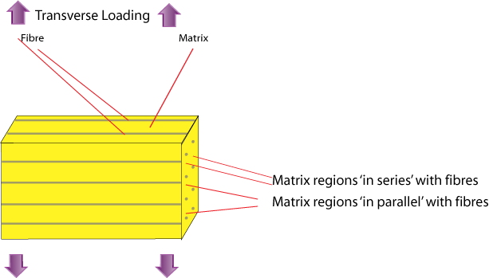
A more successful estimate is the semi-empirical Halpin-Tsai expression:
\[{E_2} = \frac{{{E_m}(1 + \xi \eta f)}}{{(1 - \eta f)}}\;\;\;\;(3)\]
where \(\eta\) = \(\frac{{(\frac{{{E_f}}}{{{E_m}}} - 1)}}{{(\frac{{{E_f}}}{{{E_m}}} + \xi )}}\)and ξ ≈ 1
An even more powerful, but complex, analytical tool is the Eshelby method (see Hull and Clyne, 1996).
For a body under the application of an arbitrary stress state the three most important modes of failure are:
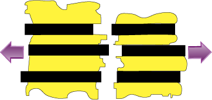 | 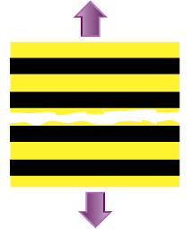 | 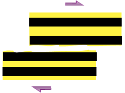 |
| axial tensile failure | transverse tensile failure | shear failure |
In the simplest scenario, it is assumed that both the matrix and the fibres deform elastically and subsequently undergo brittle fracture. The EQUAL STRAIN condition applies and there are two possible cases:
a) The matrix has the lower failure ( ultimate) strain ( εfu > εmu )
b) The fibre has the lower failure strain ( εfu < εmu )
Click here to see the notations used.
Case a):
The composite stress is given by the rule of mixtures σ1 = f σ f + (1 - f) σm up until the strain reaches εmu . Beyond this point the matrix undergoes microcracking and the load is progressively transferred to the fibres as cracking continues. During this stage there is little increase in composite stress with increasing strain. With further crack growth, if the entire load is transferred to the fibres before fibre fracture, then the composite stress, σ1, becomes fσf and the composite failure stress, σ1u, is simply f σfu :
σ1u = f σfu (4)
Alternatively, if the fibres fail before the entire load is transferred onto them the composite strength is just the weighted average of the failure stress of the matrix, σmu , and the fibre stress at the onset of matrix cracking, σfmu :
σ1u = f σfmu + ( 1 - f ) σmu (5)
The variation of σ1u with f is shown in graph 2.
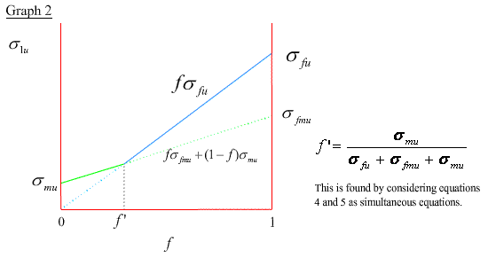
Case b):
Again, the composite stress is given by the rule of mixtures σ1 = f σf + ( 1- f ) σm up until the strain reaches εfu when the fibres fail. Beyond this point the load is progressively transferred to the matrix as the fibres fracture into shorter lengths. Assuming that the fibres bear no load when their aspect ratios are below the critical aspect ratio, s* = σf* / 2τi* , which is the critical ratio of the fibre length to its diameter below which the fibre cannot undergo any further fracture, then composite failure occurs at an applied stress of ( 1 - f) σmu .
σ1u = ( 1 - f) σmu (6)
Alternatively, if the matrix fracture takes place while the fibres are still bearing some load, i.e. the fibre aspect ratio is more than the critical value, then the composite failure stress is the weighted average of the fibre failure stress, σfu , and the matrix stress at the onset of fibre fracture, σmfu.
σ1u = f σfu + ( 1 - f) σmfu (7)
The variation of σ1u with f is shown in graph 4.
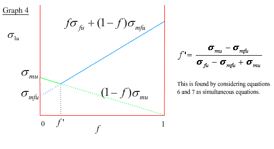
See Axial strength inaccuracy.
Generally , the fibre volume fractions fall in the range 30% to 70% (ie, > f ') and since it is usually the case that σmu << σfu , it is evident from graphs 2 and 4 that the fibre strength is dominant in determining the axial strength of long-fibre composites.
∴ σ1u ∼ fσfu for all axial cases.
In general, the presence of fibres reduces the transverse strength and the failure strain significantly relative to the unreinforced matrix. This observed tendency is largely due to high local stresses and strains around the fibre / matrix interface due to differences in the Young's Moduli of the two components. However, the transverse strength is also influenced by many other factors and consequently, it is not possible to deduce a simple estimate of σ2u without making several approximations.
One approach is to treat the fibres in the composite as a set of cylindrical holes in a simple square array. We then consider the case where the reduction in the composite cross-sectional area is maximum and this leads to the following expression for the transverse strength of a composite having a volume fraction f of fibres:
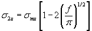
See Transverse strength derivation
Click here to see Transverse strength inaccuracy.
Similarly here, we cannot derive a simple expression for the shear strength. There are a total of six combinations of shearing plane and direction that can be grouped into three sets of equivalent pairs, as shown in the diagrams.
Shear directions
τ21 and τ31 are unlikely to occur since these require breaking of the fibres and it is not obvious which of τ12 and τ32 is easier to happen. When considering the stresses on a thin lamina in the 1-2 plane, τ32 is zero and only τ12u is important. Finite difference methods (beyond the scope of this TLP) were used to deduce the variation of the shear stress concentration factor, Ks , with fibre volume fraction.
Here, we will just take the result of this analysis, without proof, to be:
τ12u = Ks τmu
Where τmu is the ultimate matrix shear stress and Ks varies as shown in graph 6. Ks is about 1 unless the fibre volume fraction is very high (> 70%).
τ12u ≈ τmu (9)
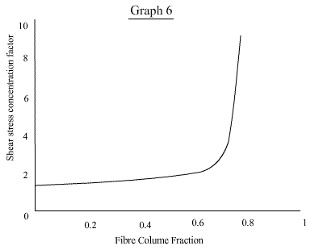
For composites to be useful they not only must be strong, but they must also be tough. The fracture energy, which is related to the fracture toughness by Equation 10, is determined by the available energy absorbing mechanisms.
\[{K_c} = {\sigma _*}\sqrt {\pi c} = \sqrt {E{G_c}} (10)\]
For a composite these are:
This process is important in ductile matrices, but relatively negligible in brittle matrices. Load transfer onto the fibres reduces the matrix stress and the matrix is unable to deform freely due to the constraint imposed by the fibres. Generally, matrix deformation is unimportant for composites, even in metallic matrices.
Metallic and polymeric fibres can undergo plastic deformation before fracture (ductile) and this contributes up to a few kJ m -2 to the overall fracture energy, whereas brittle fibre fracture only provides a few tens of J m -2 . It is important to realize that fibre fracture need not occur in the crack plane. There is a variation in flaw sizes along the fibre and, as a result, there is a variation in strength along the fibre, which can be described by the Weibull Modulus. Typically, fibre fracture in composites makes little contribution to the overall toughness.
The main energy-absorbing mechanism raising the toughness of fibre composites is the pulling of fibres out of their sockets in the matrix during crack advance. This is allowed to take place after interfacial debonding and fibre fracture away from the crack plane have occurred beforehand. The pull-out work per unit crack area is given by:
Click here for Fibre pullout derivation.
Gcp = 4 f s2 r τi*
Example: s = 50, f = 0.5, r = 10 μm, τi* = 20 Mpa → Gcp = 1.0 MJ m-2
It is because of these mechanisms that composites exhibit R-curve behaviour.
Under off-axis loading of a single lamina the applied stress state can be resolved to give the stresses along the laminar principal axes. The stress state of a body can be described by a stress tensor, shown schematically below, which can be related to the strain tensor by the equation:
\[{\sigma _{ij}} = {C_{ijkl}}{e_{kl}}\;\;\;(11)\]
where Cijkl is a fourth rank stiffness tensor containing 81 components.
Equation 11 can be rearranged to give:
\[{e_{ij}} = {S_{ijkl}}{\sigma _{kl}}\;\;\;(12)\]
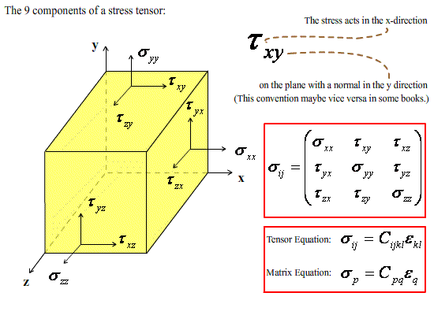
where Sijkl is the compliance tensor. If the body is in equilibrium both the stress tensor and the stiffness tensor must be symmetric about the diagonal. Then writing Equation 11 as a matrix equation (See Nye 1985) and taking into account the symmetry of the composite itself, the number of independent terms in Cpq reduces to a reasonably small number. A few examples are shown here:
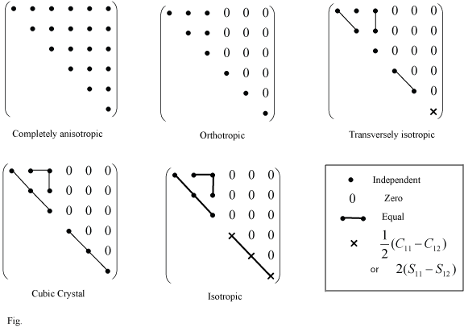
For a single lamina it is reasonable to assume that all the stresses acting are in the laminar plane, so that σ3 = τ23 = τ31 = 0. Assuming orthotropic symmetry (likely for a lamina) equation 12 becomes
\[\left[ {\begin{array}{*{20}{c}} {{\varepsilon _1}}\\ {{\varepsilon _2}}\\ {{\gamma _{12}}} \end{array}} \right] = {\left[ S \right]^{}}\left[ {\begin{array}{*{20}{c}} {{\sigma _1}}\\ {{\sigma _2}}\\ {{\tau _{12}}} \end{array}} \right] = {\left[ {\begin{array}{*{20}{c}} {{S_{11}}}&{{S_{12}}}&0\\ {{S_{21}}}&{{S_{22}}}&0\\ 0&0&{{S_{66}}} \end{array}} \right]^{}}\left[ {\begin{array}{*{20}{c}} {{\sigma _1}}\\ {{\sigma _2}}\\ {{\tau _{12}}} \end{array}} \right]\;\;\rm{(13)}\]
when stresses are applied along the principal axes of the lamina.
Clearly, when σ2 = τ12 = 0. \({S_{11}}\) = \(\frac{1}{{{E_1}}}\)
Similar considerations give
\[{S_{22}} = \frac{1}{{{E_2}}},\;\;{S_{66}} = \frac{1}{{{G_{12}}}},\;\;{S_{12}} = \frac{{ - {\nu _{12}}}}{{{E_1}}} = \frac{{ - {\nu _{21}}}}{{{E_2}}}\]
where
\[{\nu _{21}} = \left[ {{f^{}}{\nu _f} + {{(1 - f)}^{}}{\nu _m}} \right]\frac{{{E_2}}}{{{E_1}}}\]
and
ν12 = [ f νf + (1 - f ) νm]
Click here for derivation of Poisson's ratio.
We can now find elastic constants for a lamina whose fibres are at an angle θ to the loading direction by the following resolving procedure:
\[\left[ {\begin{array}{*{20}{c}} {{\varepsilon _x}}\\ {{\varepsilon _y}}\\ {{\gamma _{xy}}} \end{array}} \right] = {\left[ {\overline S } \right]^{}}\left[ {\begin{array}{*{20}{c}} {{\sigma _x}}\\ {{\sigma _y}}\\ {{\tau _{xy}}} \end{array}} \right]\;\;(15)\]
The result is that under an arbitrary planar loading system, the transformed compliance tensor replaces the compliance tensor in equation 13. Similar to before,
\[{E_x} = \frac{1}{{{{\overline S }_{22}}}},\;\;{E_y} = \frac{1}{{{{\overline S }_{22}}}},\;\;{G_{xy}} = \frac{1}{{{{\overline S }_{66}}}},\;\;{\nu _{xy}} = - {E_x}{\overline S _{12}},\;\;{\nu _{yx}} = - {E_y}{\overline S _{12}}\]
Aligned composites are very stiff along the fibre axis, but also very compliant in the transverse direction. Many applications equal stiffness in all directions within a plane and the solution to this is to stack together and bond plies with different fibre directions.
Having established the off-axis elastic constants for a single thin ply, we will now establish those for a stack of plies, a laminate. In this case there is a further complication in that while the fibres in each ply make an angle Φ with the reference x-y axes, the elastic constants of the laminate as a whole will also be affected by the angle Φ that the loading direction makes with the same reference x-y axes. The corresponding stress - strain relationship for a laminate is:
\[\left[ {\begin{array}{*{20}{c}} {{\varepsilon _x}}\\ {{\varepsilon _y}}\\ {{\gamma _{xy}}} \end{array}} \right] = {\left[ {{{\overline S }_g}} \right]^{}}\left[ {\begin{array}{*{20}{c}} {{\sigma _x}}\\ {{\sigma _y}}\\ {{\tau _{xy}}} \end{array}} \right] \;\;\;(16)\]
where the subscript g refers to global.
The average stress in the x-direction of the loading system is given by:
\[{\sigma _{x{,^{}}g}} = \frac{{\sum\limits_{k = 1}^n {({\sigma _{x{,^{}}k}}^{}{t_k})} }}{{\sum\limits_{k = 1}^n {{t_k}} }} = {\overline C _{11{,^{}}g}}^{}{\varepsilon _{x{,^{}}g}} + {\overline C _{12{,^{}}g}}^{}{\varepsilon _{y{,^{}}g}} + {\overline C _{16{,^{}}g}}^{}{\gamma _{xy{,^{}}g}}\] (17)
where tk is the thickness of the kth ply. This is simply an expansion of equation 16.
And since the in-plane strains are the same for each ply, the stress in the kth ply can be written as:
\[{\sigma _{x{,^{}}g}} = {\overline C _{11{,^{}}g}}^{}{\varepsilon _{x{,^{}}g}} + {\overline C _{12{,^{}}g}}^{}{\varepsilon _{y{,^{}}g}} + {\overline C _{16{,^{}}g}}^{}{\gamma _{xy{,^{}}g}}\]
This is an expansion of equation 15 for the kth ply.
Substituting this into equation 17 and equating the coefficients of εx,g , we have:
\[{\overline C _{11,g}} = \frac{{\sum\limits_{k = 1}^n {({{\overline C }_{11,g}}^{}{t_k})} }}{{\sum\limits_{k = 1}^n {{t_k}} }}\]
In this way the other components of the stiffness tensor for the laminate can also be found.
The inverse of the stiffness tensor, the compliance tensor, is often obtained because its relationships with the elastic constants are simpler. Like before,
\[{E_x} = \frac{1}{{{{\overline S }_{11{,^{}}g}}}},\;\;\;{G_{xy}} = \frac{1}{{{{\overline S }_{66{,^{}}g}}}},\;\;\;{\nu _{xy}} = - {E_x}{\overline S _{12{,^{}}g}}^{}\]
Clearly the laminate will exhibit different elastic constants if the loading system were applied at an arbitrary angle, Φ, to the x-y coordinate system. Try constructing your own laminate, using the model below, and calculate the elastic constants for different loading angles.
From equation 15, the 'interaction' terms S16 and S26 are both non-zero and this indicates that, under off-axis loading, normal stresses produce shear strains (as well as normal strains) and shear stresses produce normal strains (as well as shear strains). This tensile-shear interaction is also present in laminates, but does not occur if the loading system is applied along the principal axes of a single isolated lamina, in which case S16 = S26 = 0 as in equation 13.
\[{\eta _{xyx}} = {E_x}{\overline S _{16}}\;\; and\;\;{\eta _{xyy}} = {E_y}{\overline S _{26}}\]
The extent of this tensile-shear interaction is quantified by the parameters ηxyx and ηxyy (Click to open pop-up)
Tensile-shear interactions are undesirable as they lead to distortions and local microstructural damage and failure. A laminate whose interaction ratios are zero is said to be 'balanced' . Use the model below to investigate the variation of ηxyx with loading angle.
So far we have only considered in-plane stresses within a given ply and within the laminate, but when plies are bonded together there are also through-thickness (or coupling) stresses, which are difficult to quantify, between the plies. These arise from the differences in the Poisson contractions of each individual ply and can lead to microstructural damage and distortions of the laminate.
Consider the simple case of a uniaxially loaded cross-ply laminate, shown in the animations below.
The strains of the two plies parallel to the loading direction are equal, but the Poisson contraction, ν12 , for the parallel ply is greater than that for the transverse ply, ν21 (See page on Off-axis loading ). The result of this is that there are coupling stresses that try to deform the flat laminate into the shape shown in animation iii). Extending this to a random stacking sequence, it is clear that the Poisson ratio for a single ply will vary with the fibre direction (See model in Stiffness page) and therefore, coupling stresses are present in a laminate if the plies have different constituents or if the laminae are not aligned.
If the laminate has a mirror plane in the laminar plane, i.e. the laminate is symmetric, the coupling forces cancel out and the distortions are significantly reduced, even though local coupling stresses still exist.
For these reasons balanced symmetric stacking sequences are preferred, but this might not always be possible when performance requirements are taken into account.
Similar to the discussions in the page on Strength of long-fibre composites, the failure of laminae can be understood by the same three failure modes: axial, transverse and shear. A number of failure criteria have been proposed for separate plies subjected to in-plane stress states , with the assumption that coupling stresses are not present. We will introduce two here.
This assumes no interaction between the modes of failure, i.e. the critical stress for one mode is unaffected by the stresses tending to cause the other modes. Failure then occurs when one of these critical values, σ1u , σ2u and τ12u , is reached. These values refer to the laminar principal axes and can be resolved from the applied stress system by using the equation
\[\left[ {\begin{array}{*{20}{c}} {{\sigma _1}}\\ {{\sigma _2}}\\ {{\tau _{12}}} \end{array}} \right] = {\left[ T \right]^{}}\left[ {\begin{array}{*{20}{c}} {{\sigma _x}}\\ {{\sigma _y}}\\ {{\tau _{xy}}} \end{array}} \right]\]
where \[\left[ T \right] = \left[ {\begin{array}{*{20}{c}} {{{\cos }^2}\theta }&{{{\sin }^2}\theta }&{2\cos \theta \sin \theta }\\ {{{\sin }^2}\theta }&{{{\cos }^2}\theta }&{ - 2\cos \theta \sin \theta }\\ { - \cos \theta \sin \theta }&{\cos \theta \sin \theta }&{{{\cos }^2}\theta - {{\sin }^2}\theta } \end{array}} \right]\]
( See page on Off-axis loading )
It follows that under an applied uniaxial tension ( σy = τxy = 0) the critical values of σx for each failure mode are:
\[{\sigma _{xu}} = \frac{{{\sigma _{1u}}}}{{{{\cos }^2}\theta }},\;\;\;{\sigma _{xu}} = \frac{{{\sigma _{2u}}}}{{{{\sin }^2}\theta }},\;\;\;{\sigma _{xu}} = \frac{{{\tau _{12u}}}}{{\sin \theta \cos \theta }}.\]
Other treatments that take into account the interactions between failure modes are mostly based on modifications of yield criteria for metals (See TLP on Theory of Metal Forming - Stress States and Yielding Criteria ). The most important of these is the Tsai-Hill Criterion, which is an adaptation of the von Mises Criterion.
von Mises Criterion for Metals: ( σ1 - σ2 )2 + ( σ2 - σ3 )2 + ( σ3 - σ1 )2 = 2 σY2
where σY is the metal yield stress.
For in-plane stress states ( σ3 = 0) this reduces to
\[{\left( {\frac{{{\sigma _1}}}{{{\sigma _Y}}}} \right)^2} + {\left( {\frac{{\sigma {}_2}}{{{\sigma _Y}}}} \right)^2} - \frac{{{\sigma _1}{\sigma _2}}}{{{\sigma ^2}_Y}} = 1\]
This is then modified to take into account the anisotropy of composites and the different failure mechanisms to give the following expression.
\[{\left( {\frac{{{\sigma _1}}}{{{\sigma _{1Y}}}}} \right)^2} + {\left( {\frac{{\sigma {}_2}}{{{\sigma _{2Y}}}}} \right)^2} - \frac{{{\sigma _1}{\sigma _2}}}{{{\sigma ^2}_{1Y}}} - \frac{{{\sigma _1}{\sigma _2}}}{{{\sigma ^2}_{2Y}}} + \frac{{{\sigma _1}{\sigma _2}}}{{{\sigma ^2}_{3Y}}} + {\left( {\frac{{{\tau _{12}}}}{{{\tau _{12Y}}}}} \right)^2} = 1\]
The metal yield stresses can be regarded as composite failure stresses and since composites are transversely isotropic ( σ2u = σ3u ) we arrive at the Tsai-Hill Criterion for composites.
\[{\left( {\frac{{{\sigma _1}}}{{{\sigma _{1u}}}}} \right)^2} + {\left( {\frac{{\sigma {}_2}}{{{\sigma _{2u}}}}} \right)^2} - \frac{{{\sigma _1}{\sigma _2}}}{{{\sigma ^2}_{1u}}} + {\left( {\frac{{{\tau _{12}}}}{{{\tau _{12u}}}}} \right)^2} = 1\]
Below, the Maximum Stress and the Tsai-Hill criteria are used to predict the dependence on the loading angle of the tensile stress required to cause failure of a single lamina.
The above treatments only apply to single isolated plies. So, in order to extend this to laminates, we must obtain the in-plane stresses in each ply of a laminate subjected to an arbitrary in-plane stress state.
From Equation 13 the stress tensor for the kth ply is related to the strain tensor by:
\[\left[ {\begin{array}{*{20}{c}} {{\sigma _{1k}}}\\ {{\sigma _{2k}}}\\ {{\tau _{12k}}} \end{array}} \right] = {\left[ C \right]_k}^{}\left[ {\begin{array}{*{20}{c}} {{\varepsilon _{1k}}}\\ {{\varepsilon _{2k}}}\\ {{\gamma _{12k}}} \end{array}} \right]\]
The strain tensor of the kth ply can be resolved from the strain tensor of the laminate by using Equation 14:
\[\left[ {\begin{array}{*{20}{c}} {{\varepsilon _{1k}}}\\ {{\varepsilon _{2k}}}\\ {{\gamma _{12k}}} \end{array}} \right] = {\left[ {T'} \right]_k}^{}\left[ {\begin{array}{*{20}{c}} {{\varepsilon _x}}\\ {{\varepsilon _y}}\\ {{\gamma _{xy}}} \end{array}} \right]\]
Now, from Equation 16, the laminate strain tensor is related to the laminate stress tensor by:
\[\left[ {\begin{array}{*{20}{c}} {{\varepsilon _x}}\\ {{\varepsilon _y}}\\ {{\gamma _{xy}}} \end{array}} \right] = {\left[ {{{\overline S }_L}} \right]^{}}\left[ {\begin{array}{*{20}{c}} {{\sigma _x}}\\ {{\sigma _y}}\\ {{\tau _{xy}}} \end{array}} \right]\]
Combining these three equations gives:
\[\left[ {\begin{array}{*{20}{c}} {{\sigma _{1k}}}\\ {{\sigma _{2k}}}\\ {{\tau _{12k}}} \end{array}} \right] = {\left[ C \right]_k}^{}{\left[ {T'} \right]_k}{\left[ {{{\overline S }_L}} \right]^{}}\left[ {\begin{array}{*{20}{c}} {{\sigma _x}}\\ {{\sigma _y}}\\ {{\tau _{xy}}} \end{array}} \right]\]
An appropriate failure criterion is then applied and the onset of laminate failure is taken to be the point at which one of the plies fail.
Note that the Maximum Stress Criterion suggests possible modes of failure whereas the Tsai-Hill criterion does not.
In this TLP we have looked at the approaches taken to go about deriving the in-plane, on-axis elastic constants, in particular the axial and transverse Young's Moduli and the Poisson's ratios , for a composite. From these, we went onto consider the strengths and failure modes of fibre-aligned composites and explore the question as to why they exhibit high strength and toughness , even though the constituent materials tend to be brittle.
With this basic understanding we were able to extend our consideration to laminates , which have a possible advantage of being isotropic, and we have seen how to calculate the elastic constants for an arbitrary in-plane stress state. Off-axis loading presents us with the problem of tensile-shear interactions and coupling stresses in laminates, as a result of which balanced symmetric laminates are preferred. Then in the last section we applied the Maximum Stress Criterion and the Tsai-Hill Criterion to predict the required stress state for laminate failure.
The greatest advantage of composite materials is strength and stiffness combined with lightness and durability; and these properties are the reasons why composites are used in a wide variety of applications.